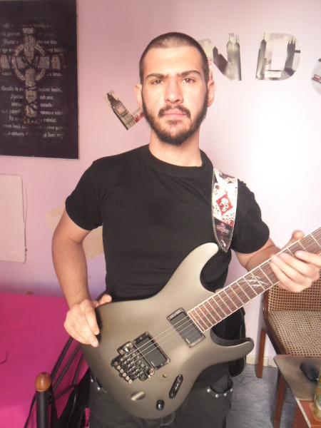
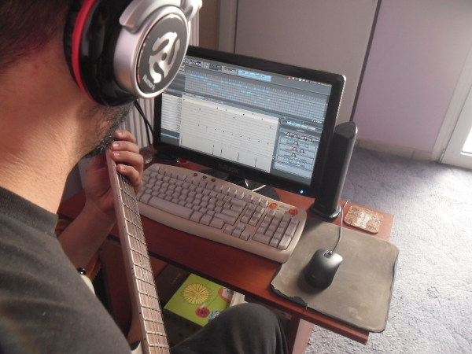
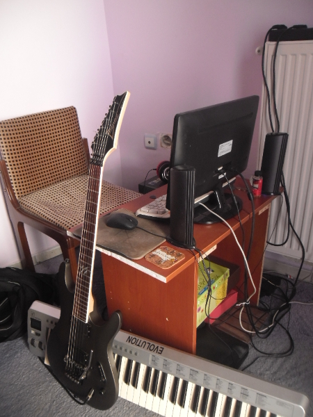
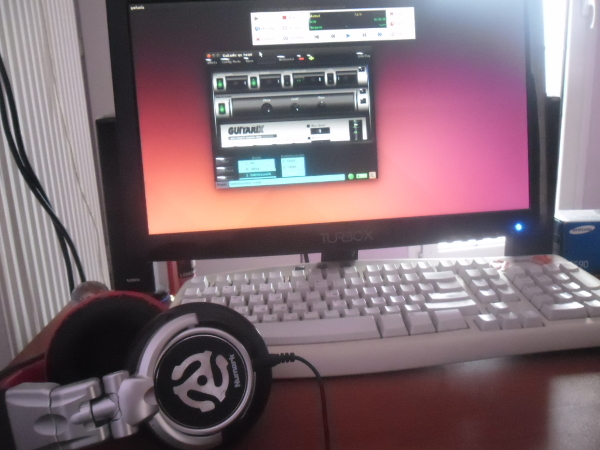
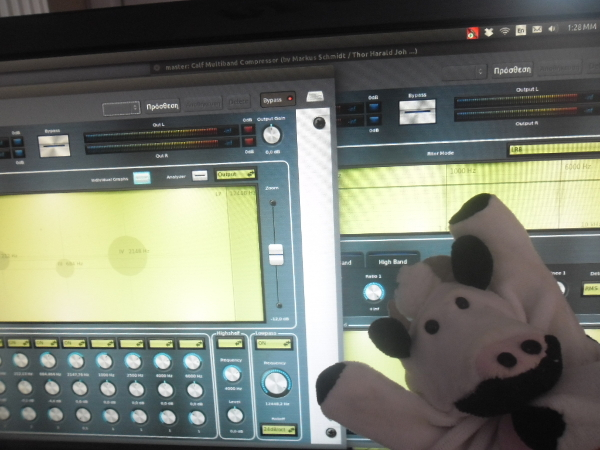

LMP Asks #14: An interview with Babis Kouvalis
This month LMP talked to Babis Kouvalis, guitarist and FLOSS enthusiast. Babis has a YouTube channel where he demos FLOSS software, primarily Guitarix.

Hi Babis and thank you for taking the time to do the interview. Where do you live, and what do you do for a living?
I live in Athens, Greece with my girlfriend at her house. At the moment I'm unemployed due to the economic crisis, but I have much more time to work with music and live from it.
I started a YouTube channel and I'm starting a band too. My target with YouTube is that I want to show to people that working with Linux is actually a thing and bring more people to this world! Also I want a place to upload my work so I can show it to others.
Can you tell us a bit about any other projects you are involved in?
After my duty in the army, I got into an amateur thrash metal band and jammin! I did also some live shows with this band, but it was never professional. Now I'm starting a pro Melodic Death Metal band with my brother.
What is your musical background?
I started playing guitar at 19 years old and I learned everything from YouTube and friends! My father played the guitar and other instruments for many years but when me and my brother were born he sold everything, except from an acoustic guitar, so he can raise us.
After many years he bought an electric guitar to start playing again and I was curious about it. When I learned the chords from Santana's 'Put your lights on' song I loved the instrument and I too bought an electric guitar!

Babis jammin along with Hydrogen
What is your typical workflow when making music?
Basically I don't have a specific workflow when making music. I'm doing exercises on guitar while watching anime or YouTube videos and the riffs pop up! Then I open Hydrogen (I use the DeathMetal kit) and try to find the tempo or the time signature and write some rhythm on the riff I played and liked. From there I expand it to a whole song.
When I'm done writing drums in Hydrogen, I export them into separate tracks so I can mix it in Ardour. I like to have all the wav files in one program and one mixer. I believe it's easier to mix that way.
Or if I'm not with the guitar and its night-time I open Tuxguitar and write the riff that came to my mind so I will not forget it.
Tell us a bit about your hardware set up
I have an onboard Creative SoundBlaster sound card and I connect my guitar, an Ibanez s520ex with EMG's, direct to the PC!
Also I'm using an Evolution MK-361 USB keyboard to record with AMsynth.
I prefer audio recording than writing MIDI notes to the DAW. I find it more creative because you can change the melody as you record and add some new ideas to the song!
That's it! Everything else is FLOSS software on Ubuntu.

Babis' recording set up
What is your history with Linux?
My father used an old PC with Windows and it had recording software, so he could record his guitar or keyboard. I tried to learn from him a bit but I never managed to understand anything then.
I had an old netbook and I installed Lubuntu so I can test them too. I was amazed that all the software was free and it was pretty good as well!
I installed Ardour, Guitarix and started recording with an IK multimedia stealthplug sound card. Then from YouTube tutorials I learned how to mix, etc.
After 5 years I resurrected the old netbook with Lubuntu and learned all these free software. This year I made a full switch to Ubuntu with my desktop computer!
You recently contributed some Guitarix presets to musical-artifacts.com. Can you tell us a bit about about that?
Musical-artifacts I believe it was really a dream come true! I always wanted a site to upload and download presets for Guitarix just like some other apps from other OS, which they have their sites and all the users can share their presets.
It's good also for someone who is new and can't get a good sound from Guitarix, to download 2-3 presets and see how the whole app works.
Maybe I will make some presets, in the future, inspired by many famous artists, like Jeff Loomis for example. Who knows?
Why do you feel open source is important, and what for you is the most important aspect of Linux audio?
I believe open source is the future! I mean if a piece of software has some problems or you have an idea for an improvement, you can just do it and share it with the rest of world!
I believe software can get better much faster and easier with open source.
The most important aspect of Linux audio is that the software is free. Saves a lot of money and is not that difficult to understand them and use them. Plus there are many forums, like linuxmusicians.com with people that are willing to help you and learn anything from them about Linux audio.
What do you feel is currently lacking in Linux audio?
I think the fear of the command line puts some people off. I don't think that Linux doesn't have enough reasons to make someone use it!
There are sites like Guitarix and Calf Studio Gear that already look so pro and amazing! The applications of Linux are getting better every year.
Also another problem is the marketing. I believe if there were more people on YouTube showing Linux audio applications, in a much easier and cooler way, it would attract many more people that don't have money or the equipment, to the Linux audio world.
Sebastian Posch did a pretty cool review with Guitarix and he was my inspiration for the YouTube channel that I have now. I really wanna show the world how many cool stuff can be made with Linux audio with only a computer, a cable and a guitar!

What is your favourite FLOSS plugin?
Calf plugins! The guys from Calf Studio Gear did an AMAZING job with these. I use them every day and soon I'll make some review videos showing them to world. Basically they have all the things you need for recording in one package and is working 100% with Ardour!
Also Guitarix! I would never imagined that I would not consider buying an amp instead of software.

Babis, and his stuffed cow, really like Calf Studio Gear!
Are there any FLOSS projects that you are excited about at the moment?
Yes I'm looking forward to checking out AMsynth 1.6.0 and sometime, maybe I will upgrade to Ardour 4.4! I saw some cool stuff on their website, so I'm considering to make a donation too!
What resources have you found most useful on your Linux audio journey?
Basically your site in my honest opinion. You have all the stuff about Linux audio together so I don't need to check out a hundred forum threads about... let's say for an example "JACK configuration" which is the most important thing in Linux audio.
What changes, if any, would you like to see within the Linux Audio community?
The Linux Audio community is pretty awesome as is. I believe with better marketing it will attract many more people. That's why I'm doing the YouTube channel as I said.
What advise would you give to a new Linux Audio user?
There is no risk with Linux distros! There are many different flavours too, so you can choose what you like! I'm using Linux for 2 years and made the full switch this year. I will never go back to Windows. Linux audio has many forums if you want help with anything and everything a bedroom musician needs!